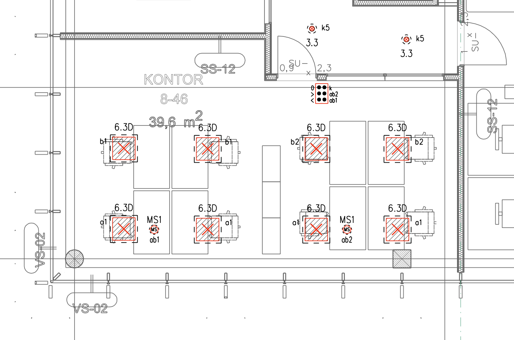
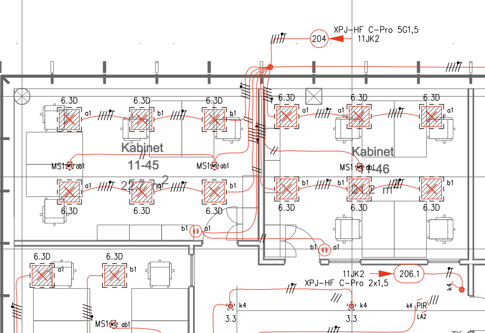
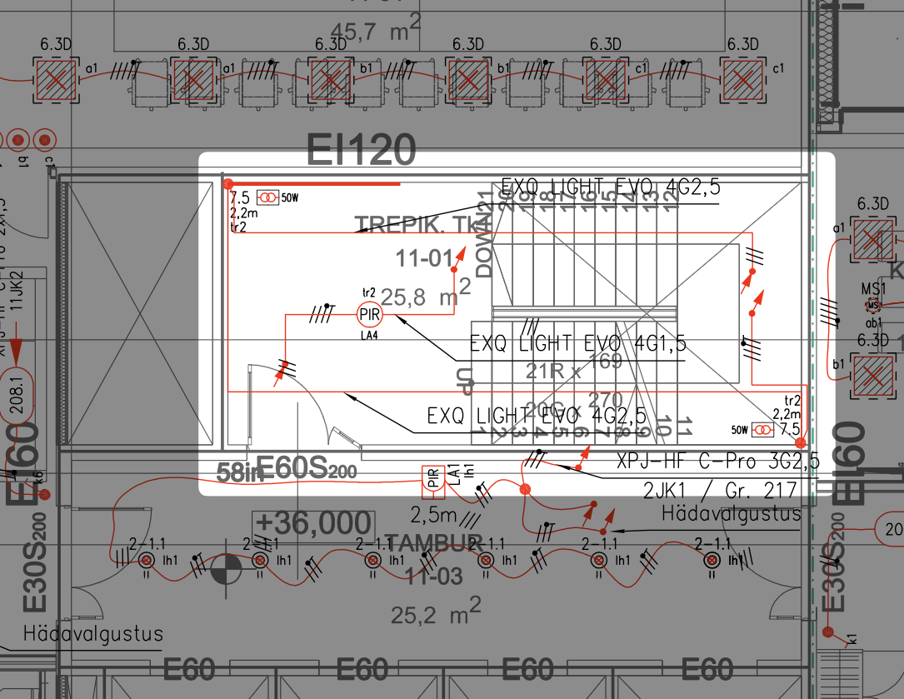

Valgustuspaigaldised
4.5. Valgustuspaigaldised¶
Valgustuspaigaldis on hoone või rajatise üks olulisemaid elektripaigaldise osi, mis tagab vajaliku nähtavuse, ohutuse, töökeskkonna kvaliteedi ja esteetilise ilme. Kvaliteetne valgustuslahendus arvestab nii funktsionaalseid vajadusi kui ka energiatõhusust ja kasutajamugavust. Käesolev jaotis kirjeldab nõudeid üld-, turva-, ja fassaadivalgustuse projekteerimisele ja dokumenteerimisele.
4.5.1. Üldnõuded ja Standardid¶
- Põhistandardid: Valgustuspaigaldiste projekteerimisel tuleb lähtuda eelkõige järgmistest standarditest:
- EVS-EN 12464 seeria: "Valgus ja valgustus. Töökohtade valgustus" (Osa 1: Sisetöökohad; Osa 2: Välistöökohad). Määratleb kvantitatiivsed ja kvalitatiivsed nõuded erinevat tüüpi töökohtadele.
- EVS-EN 1838: "Rakendusvalgustus. Hädavalgustus". Määratleb nõuded evakuatsiooni- ja paanikavältimisvalgustusele.
- EVS-HD 60364 seeria: "Ehitiste elektripaigaldised". Määratleb üldised paigaldus- ja ohutusnõuded.
- CIE 97:2005: Juhend sisevalgustuse hooldustegurite määramiseks.
- Disainiprintsiibid:
- Tagada vastavalt ruumi/ala otstarbele piisav valgustihedus (lx) ja selle ühtlus.
- Piirata räigust (UGR - Unified Glare Rating) vastavalt standardi nõuetele.
- Valida sobiv värvsustemperatuur (K) ja tagada piisav värviedastusindeks (CRI / Ra).
- Arvestada hooldusteguriga (MF), et tagada nõutav valgustatus kogu hooldeperioodi vältel.
- Optimeerida energiatõhusust (arvutada LENI, kui nõutud). Võimalusel kasutada päevavalgust ja efektiivseid juhtimisstrateegiaid.
- Kooskõlastamine: Valgustuslahendus tuleb tihedalt kooskõlastada arhitekti ja sisearhitektiga, et tagada valgustite sobivus interjööri/eksterjööri ning nende korrektne integreerimine lagedesse, seintesse jm konstruktsioonidesse.
4.5.2 Tabel: Valgustusplaanide Sisu Nõuded Staadiumite Kaupa¶
| Staadium | Sisu Nõuded |
|---|---|
| EP | Eelprojekt (Fookus: kontseptsioon, põhimõtteline paigutus) - Esitada valgustuse üldine kontseptsioon (võib olla ka seletuskirjas). - Näidata põhimõtteline valgustite paigutus suuremates ruumides/alades, määratleda peamised valgustitüübid (nt üldvalgustus, kohtvalgustus). - Määratleda juhtimistsoonide piirjooned ja juhtimise põhimõtted (nt kas käsitsi, automaatne). - Näidata hädavalgustuse (turvavalgustuse) vajadus ja põhimõtteline tüüp (autonoomne/kesktoide). - Näidata fassaadivalgustuse kontseptsioon ja põhimõtteline valgustite asukoht (võib olla ka vaadetel). |
| PP | Põhiprojekt (Fookus: detailne paigutus, tüübid, juhtimine, hädavalgustus) - Üldvalgustuse plaan (EHR 5-300): - Näidata kõikide valgustite täpsed asukohad koos tüübi tähistega (viide valgustite loetelule/spetsifikatsioonile). - Näidata lülitite, andurite, regulaatorite ja muude juhtimisseadmete täpsed asukohad. - Märkida selgelt juhtimisgrupid (millised lülitid/andurid juhivad milliseid valgusteid) (vt seotud juhtimisskeemide kirjeldust ptk 4.5.9). - Näidata vajadusel valgustite paigalduskõrgused. - Eristada erinevate toitesüsteemide (TAVA/GEN/UPS) valgusteid ja seadmeid (nt kihtide või värvidega). - Hädavalgustuse plaan (EHR 5-400): - Näidata hädavalgustite (sh evakuatsiooni-, paanikavältimis-, kõrge riski tsooni valgustid) ja ohutusmärkide täpsed asukohad ja tüübid. - Märkida plaanile evakuatsiooniteed. - Näidata valgustamist vajavate tuleohutuspaigaldiste (nt tulekustutid, ATS nupud, esmaabivahendid) asukohad. - Näidata keskseadmete (CBS, seireseade) asukoht, kui on kasutusel (vt seotud skeeme ja loetelusid ptk 4.5.9). - Fassaadivalgustus: Näidata valgustite täpsed asukohad ja tüübid hoone vaadetel ja/või eraldi fassaadivalgustuse plaanil. |
| TP | Tööprojekt (Fookus: kaabeldus, ühendused, paigaldusinfo) - Esitada kogu Põhiprojekti (PP) staadiumi info. - Näidata kaabeldus (juhtmete/kaablite kulgemisteed) valgustitest ja juhtimisseadmetest jaotuskeskusteni, harukarpide või kontrolleriteni (vt ka seotud skeeme ptk 4.5.9). Kaabelduse võib näidata lihtsustatud kujul (nt spline/polyline), kuid seosed peavad olema üheselt mõistetavad. - Märkida gruppide numbrid ja/või viited jaotuskeskuse väljunditele iga valgusti/lüliti/juhtgrupi juurde. - Hädavalgustuse plaanil näidata kesktoitesüsteemi kaabeldus ja vajadusel adresseeritavate valgustite aadressid (vt ka aadresside tabelit ptk 4.5.9). - Lisada vajadusel spetsiifilised paigaldusjuhised või viited detailijoonistele/sõlmedele (mis on esitatud eraldi joonistel). |
4.5.3. Valgustusarvutused¶
- Vajalikkus: Nõuetele vastavuse tõendamiseks ja optimaalse lahenduse saavutamiseks tuleb teostada valgustustehnilised arvutused vähemalt standardites nõutud ruumidele ja aladele.
- Tarkvara: Arvutuste tegemiseks on soovitatav kasutada spetsialiseeritud tarkvara (nt DIALux, Relux).
- Lähteandmed: Arvutuste aluseks on ruumide täpsed mõõtmed ja kujud (arhitektuursest projektist/mudelist), pindade peegeldustegurid ning valitud valgustite fotomeetrilised andmed (ldt-/ies-failid) ja korrektne hooldustegur.
- Dokumenteerimine: Arvutuste tulemused (saavutatud valgustihedus, ühtlus, UGR jne) tuleb esitada arvutusraportitena, mis lisatakse projektile (tavaliselt PP ja TP staadiumis). Raport peab sisaldama kasutatud lähteandmeid ja tulemuste graafilist esitust (nt pseudo värvides või isoluks-kõveratega plaanid). Vt ka üldnõudeid arvutustele ptk 3.7.
4.5.4. Valgustite Valik ja Spetsifikatsioonid¶
- Valiku Protsess: Valgustite valik toimub sageli koostöös arhitekti, sisearhitekti ja tellijaga. Elektriprojekteerija ülesanne on tagada, et valitud valgustid vastaksid tehnilistele ja fotomeetrilistele nõuetele ning oleksid ohutud ja sobivad antud keskkonda.
- Spetsifikatsioonid (vt ptk 3.6):
- PP staadium: Määratletakse valgustitelt nõutavad tehnilised ja fotomeetrilised parameetrid: valgusvoog (lm), süsteemi efektiivsus (lm/W), võimsus (W), värvsustemperatuur (K), värviedastusindeks (CRI/Ra), räiguse piirväärtus (UGR), eluiga (LxxByy), valgusjaotuskõver, kaitseaste (IP/IK), löögikindlus, materjal, mõõdud, paigaldusviis, juhtimisvõimalus (nt DALI, 1-10V, lülitatav), garantiitingimused. Võib esitada referentstoote.
- TP staadium: Esitatakse konkreetsed valitud valgustite mudelid koos tootja ja tootekoodiga.
- Loetelud: Projekti (PP/TP) koosseisu kuuluvad:
- Valgustite loetelu: Sisaldab iga valgustitüübi tähist, nimetust, asukohta (ruumid/alad), kogust, paigaldusviisi, viidet spetsifikatsioonile.
- Valgusallikate loetelu: Kui kasutatakse eraldi valgusallikaid (nt lampe), siis nende tüüp, sokkel, võimsus, värvsusomadused, eluiga, kogus.
4.5.5. Valgustuse Juhtimine¶
- Strateegiad: Projekteerida tuleb läbimõeldud valgustuse juhtimise süsteem, mis tagab kasutusmugavuse ja energiatõhususe. Kasutada võib:
- Käsitsi lülitamist (tavalised lülitid, nupplülitid).
- Automaatset lülitamist (liikumis- ja kohalolekuandurid).
- Päevavalguse kompenseerimist (valgusandurid).
- Ajapõhist juhtimist (programmkellad).
- Stseenide loomist ja hämardamist.
- Tsentraalseid juhtimissüsteeme (nt DALI, KNX).
- Dokumenteerimine:
- Juhtimisgrupid: Plaanidel tuleb selgelt näidata, millised valgustid kuuluvad millisesse juhtimisgruppi ja milliste lülitite/anduritega neid juhitakse.
- Juhtimisseadmete asukohad: Lülitite, nuppude, andurite, juhtpaneelide asukohad tuleb kooskõlastada sisearhitektiga ja näidata plaanidel.
- Juhtimisskeemid: Keerukamate süsteemide (DALI, KNX jne) puhul tuleb koostada eraldi juhtimisskeemid (nt struktuuriskeem, ühendusskeemid), mis näitavad süsteemi ülesehitust, komponente ja ühendusi.
4.5.6. Valgustuse Plaanid¶
-
Üldvormistus: Järgida peatükis 3.4 toodud nõudeid. EHR kood: 5-300.
-
Sisu:
-
EP staadium: Valgustuse kontseptsiooni kirjeldus.
-
PP staadium: Täpne valgustite paigutus koos tüübi tähiste ja asukohtadega; lülitite, andurite ja muude juhtimisseadmete asukohad; juhtimisgruppide selge märgistus; vajadusel paigalduskõrgused (eriti rippvalgustid); erinevate süsteemide (tava-, turva-, varu-toide) eristamine kihtide ja/või värvidega.

- TP staadium: Kogu PP info + kaabeldus valgustitest ja juhtimisseadmetest jaotuskeskusteni (või harukarpide/kontrolleriteni); gruppide numbrid ja viited jaotuskeskusele.


-
4.5.7. Hädavalgustus (Turvavalgustus)¶
-
Standard: EVS-EN 1838. Projekteerimisel tuleb arvestada ka tuleohutusosa projektis määratletud nõuetega (evakuatsiooniteed jms).
-
Liigid: Projekteerida tuleb vastavalt vajadusele:
- Evakuatsioonitee valgustus: Tagamaks inimeste ohutu väljumise.
- Paanikavältimisvalgustus: Suuremates ruumides/alades paanika vältimiseks.
- Kõrge riskiga tööala valgustus: Ohtlike protsesside ohutuks lõpetamiseks.
- Ohutusmärgid: Evakuatsiooniteid ja -pääse tähistavad valgustatud või järelhelenduvad märgid.
-
Süsteemi Tüüp: Määratleda, kas kasutatakse autonoomseid (oma akuga) valgusteid või kesktoitesüsteemi (CBS - Central Battery System). Määratleda nõutav autonoomiaaeg (nt 1h, 3h) ja seiresüsteem (testnupp, automaattest, keskmonitooring).
-
Arvutused: Kontrollida nõutavate valgustiheduste (min 1 lx evakuatsioonitee keskjoonel põrandal, min 0.5 lx paanikavältimisalal) ja ühtluse saavutamist.
-
Plaanid (EHR 5-400): Näidata hädavalgustite (sh ohutusmärkide) täpsed asukohad ja tüübid; märkida evakuatsiooniteed; näidata valgustamist vajavate tuleohutuspaigaldiste (nt tulekustutid, ATS nupud, esmaabipunktid) asukohad; näidata keskseadmete (CBS, monitooringuseade) asukohad.
(Joonis 4)
-
Kaabeldus ja Adresseerimine (TP): Näidata kesktoitesüsteemi kaabeldus. Adresseeritavate süsteemide puhul näidata valgustite aadressid plaanil.
(Joonis 5)
4.5.8. Fassaadivalgustus¶
-
Standard: EVS-EN 12464-2 jt asjakohased.
-
Nõuded: Määratleda vastavalt ala kasutusele (liiklusteed, parklad, kõnniteed, platsid, hoone arhitektuurne esiletõstmine). Arvestada valgussaaste vältimisega.
-
Plaanid: Fassaadivalgustus näidata hoone vaadetel. Lisata positsioonid, läbiviigu asukohas jne.
(Joonis 6)
-
Juhtimine: Määratleda juhtimisviis (hämaraandur, kell, kalender, keskjuhtimine). Kooskõlastada võimalik liitumine linna tänavavalgustuse juhtimisvõrguga.
-
Toide: Lahendatakse koos muude välispaigaldiste toidetega (vt ptk 4.1).
4.5.9. Loetelud ja Skeemid¶
- Loetelud: Koostada Valgustite loetelu ja Valgusallikate loetelu vastavalt ptk 3.6 ja 4.5.3 nõuetele.
- Skeemid:
- Valgustuse juhtimise skeemid: Vajalikud keerukamate süsteemide (DALI, KNX) puhul, näidates süsteemi struktuuri, komponente (kontrollerid, gateway'd, andurid, toiteplokid) ja siinide/kaablite ühendusi.
- Hädavalgustuse skeemid: Vajalikud kesktoitesüsteemide (CBS) ja keskseirega süsteemide puhul, näidates keskseadme, akupankade, gruppide ja valgustite ühendusi ning seiresüsteemi ülesehitust.
- Skeemide vormistamisel järgida ptk 3.5 nõudeid.
Märkus: Valgustuslahenduse kvaliteet ja energiatõhusus sõltuvad suuresti lähteandmete täpsusest ja hoolikast projekteerimisest ning arvutustest. Koostöö arhitekti ja sisearhitektiga on esteetiliselt meeldiva ja funktsionaalse lõpptulemuse saavutamiseks hädavajalik.